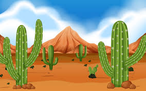
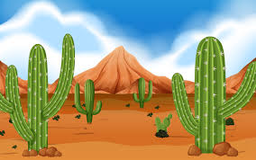
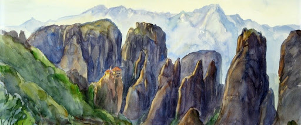
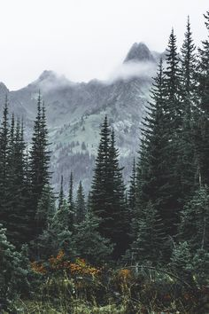
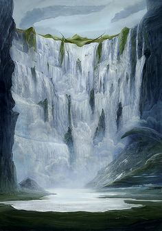

Loromoth
Vadon
 

- Wüste
- war fruchtbar, jetzt aber komplett mit Sand bedeckt
- unter dem Sand aber noch Nährboden
- wenige Sträucher und Büsche
Berge von Loromoth
 - von kahlen, hohen Bergen mit vielen Klüften zu kleinen, mit Höhlen durchzogenen und dicht bewachsenen Bergen
- zwei passierbare Durchgänge
Cureg
- tiefe Täler
- viele Flüsse und Wasserfälle
- reichhaltige und vielfältige (kleine) Flora
Städte
Turninch
Turninch liegt am Rand der Wüste Vadons. Von Turninch führt einer der zwei Wege in den Gebirgskamm und verbindet somit Vadon und die Berge von Loromoth. Die Stadt wurde von einigen Vadoniern gegründet, die es aufgegeben haben das heilige Land zu suchen. Über Jahre hinweg ließen sich immer mehr Vadonier nieder. Turninch ist ihre Hauptverbindung zur Außenwelt und anderen Zivilisationen.
Dras und Drus
Die beiden Festungen Dras und Drus liegen in den beiden Durchgängen in den Bergen von Loromoth. Sie wurden von Drasken erbaut, die sich ??? dort niederließen. Die Drasken gingen einen Kompromiss mit den Quork ein. Sie bauten die Festungen, damit die Vadonier nicht rüber kamen und im Gegenzug durften sie in den Bergen von Loromoth siedeln. Die Festungen sind in den Stein des Gebirges hineingeschlagen worden. Nur die Mauer, welche den Durchgang von Vadonien nach Cureg versperrt, wurde aufgeschüttet. Massive Steintore ermöglichen dennoch Durchlass. Mit einem kilometerlangen Gang sind die beiden Festungen miteinander verbunden.